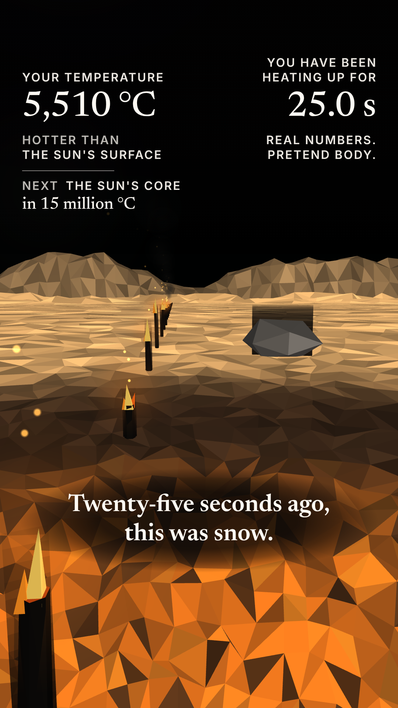
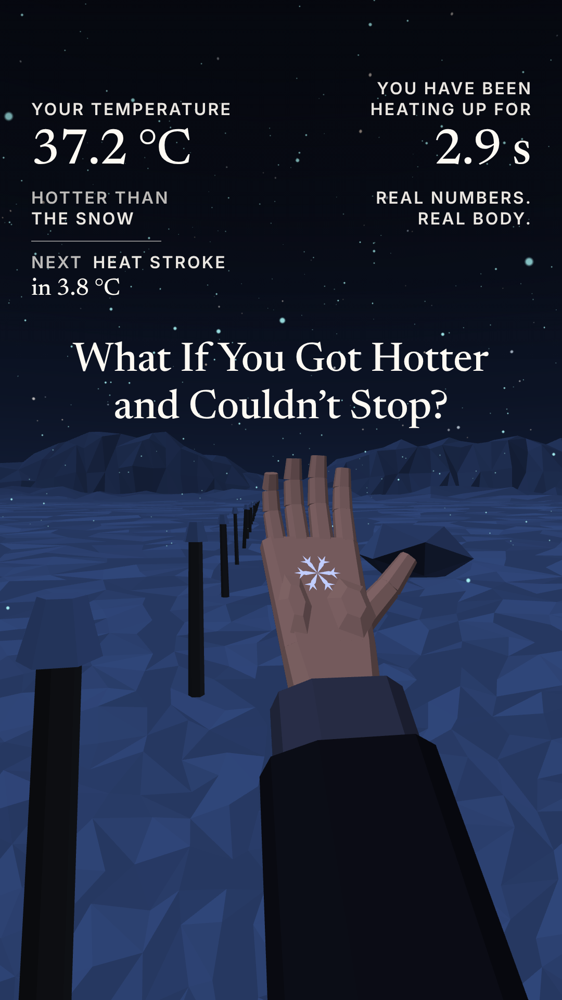
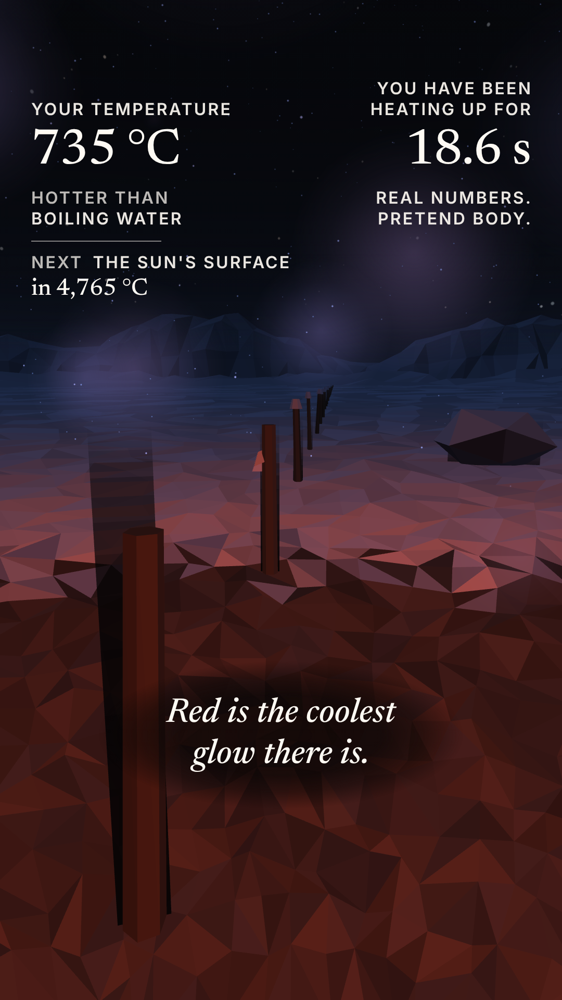
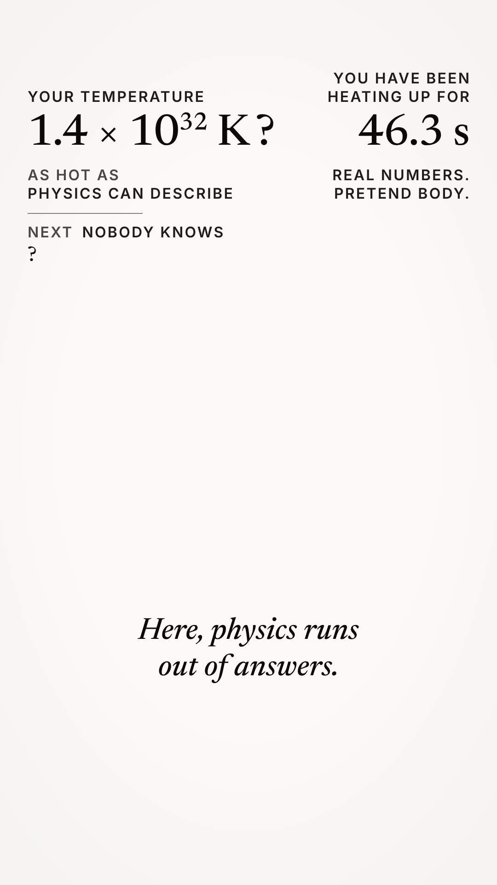
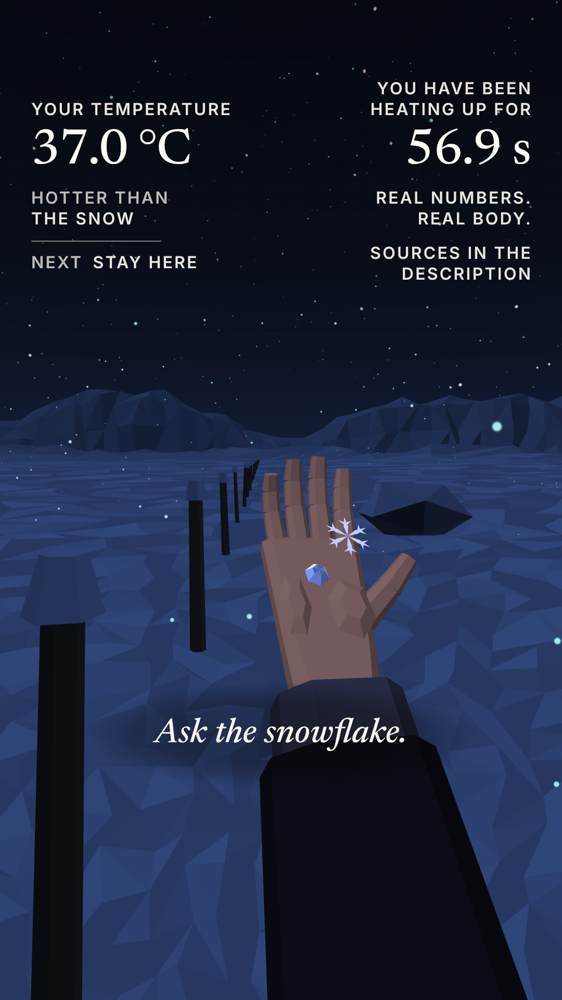
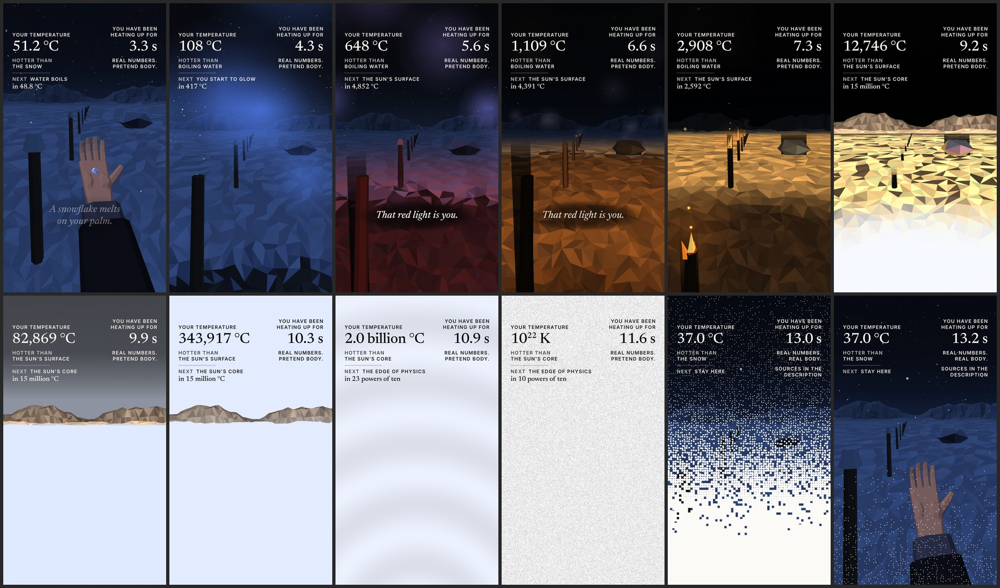
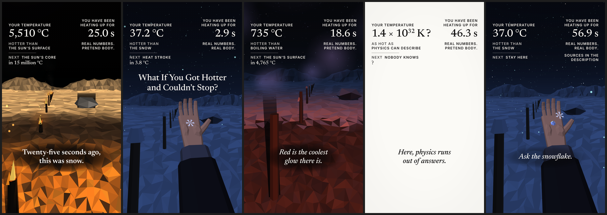

Mood board: What If You Got Hotter and Couldn't Stop?
Kit: video-pipeline/styles/lowpoly-first-person (new, three.js). 1080x1920, 30 fps. First version; nothing revised yet.
Every frame below is world.set(temperature, time, pose) with the script's words over it.
Palette
Measured from our five key frames (palette.json): #05070b, #f8f7f2, #2c3a61, #0f121e, #45231a, #b1723f. Mean brightness 0.33, dark share 0.65 (reference 0.23 and 0.58). ground matches (#05070b against #040303). The warm accent is present (#b1723f, 8% of the key frames, against the reference's #ac6634); the tool names night blue #283b67 as accent because snow fills two of five frames. Ours is more saturated and ends bright where the reference ends dark: the script's arc, not a drawing choice.
Key frames beside the reference
Reference on the left (horizontal), ours on the right (vertical), at the same height.
Cold open, film 0.0 s (replays 28.0 s)


Both open on the far stage with both counters already running and one upright sentence. Ours: scorched ground glowing at your feet, burning fence, lit ridge, black sky.
The ordinary start, film 5.9 s


Title as a question in clear sky, the only words mid-frame. Ours: a snow field, a fence and a bare palm with the flake; no street, houses, trees or people.
Mid stage, film 21.6 s (735 °C)


Night with one warm light. In the reference it is a street lamp; here it is you: red on the near ground and the first post, blue wherever it does not reach.
Brightest stage and payoff, film 49.3 s


The emptied frame with the NEXT row on its punchline. The reference empties to dark; ours to white, with dark ink.
Last frame, film 59.9 s


The opening place again. Ours ends on the planted object: the bead of the first flake and a second one touching.
The world function across the run

Twelve states from the kit example, in order: 51 °C (palm), 108 (melt ring, steam), 648 (red), 1,109 (orange, posts charring), 2,908 (fire, stars gone), 12,746 (white-hot ground, bleach starting), 82,869, 343,917 (the ridge the last dark line), 2 billion (rings), 10²² K (grain), then the release into snowfall. Words here are the example's, not the script's.
At phone width

The five key frames at 360 px wide, the size a phone shows them. Small rows are 32 px in the frame: cap height 1.2% of the height, never below 0.8 opacity.
Contrast of the words, measured
| Frame | Zone | Median | Worst 5% |
|---|---|---|---|
| coldopen | counters | 16.7:1 | 16.5:1 |
| coldopen | line | 16.8:1 | 14.5:1 |
| snow | counters | 15.9:1 | 15.6:1 |
| snow | title | 17.9:1 | 17.5:1 |
| glow | counters | 15.9:1 | 13.8:1 |
| glow | line | 18.7:1 | 18.1:1 |
| edge | counters | 16.0:1 | 15.6:1 |
| edge | line | 19.0:1 | 19.0:1 |
| flake | counters | 15.8:1 | 15.5:1 |
| flake | line | 15.6:1 | 12.5:1 |
WCAG contrast of each letter pixel against the pixel behind it in the same frame rendered without words (frames-bare.html); median and the worst 5%. The cold-open line over the glowing ground: 16.8:1 median, 14.5:1 worst 5% over the glowing ground.
Type
Shown at half size. Newsreader and Inter (both SIL OFL) are close matches to the reference's serif and tracked sans, which could not be named with certainty.
| Reference (1920x1080) | Ours (1080x1920) | |
|---|---|---|
| Small rows | cap 13 px, 1.2% of height, dimmed to 62-70% | cap 23 px, 1.2% of height, 0.8-0.92 |
| Large figure | digits 45 px, 4.2% | digits 70 px, 3.6% |
| Story line | cap 42 px, one row, baseline 90.5% | cap 47 px, two rows, centre 73.5%, max 820 px |
| Blocks | top corners, side by side, margin 5.6% | top corners, margin 5.6%, long rows broken in two |
Rules
Drawing
- solids are flat faces, one colour a face, no outlines, no textures
- the place: a snow field at night, a fence line passing half a metre to your left and running to a notched ridge 2.2 km off, one boulder to the right at 13 m, stars with a denser band, slow snowfall
- your body is a bare right palm, open and facing up, with a dark sleeve and cuff; it is in frame only at 37 °C (start and close)
- the snowflake is a white six-armed flake about a fifth of the palm wide; it melts to a faceted bead with one bright face
- sky, stars, snow, steam and smoke are soft; flames are flat-sided tongues
- past one million degrees the frame is the veil: blue-white with slow rings, then grain, then flat white
Composition
- horizon between 40% and 50% of the height; 50% (pitch 0) while the title is up
- counters occupy 7.8% to 31% of the height over the sky
- the line block is centred at 73.5%; when the palm is up the line sits over the wrist and sleeve
- the fence runs from the left foreground to a vanishing point near the centre; the first post is a foreground column at the left edge
- nothing below 80% but scene: the Shorts caption area covers it
Motion
- counters change every frame
- snow falls slowly at 37 °C; steam, flames, sparks and shadows flicker with t
- the camera never moves, it turns slowly and tilts on cue (down for the palm, level for the title)
- lines fade in and out over 0.2-0.3 s; the picture never fades
Never
- cuts, dissolves or black frames
- outlines or textures on solids
- a second warm colour or accent in type
- small rows under 32 px or under 0.8 opacity
- words below 80% of the height or wider than 820 px in the line
- white words over white: switch ink
- the reference's street, houses, trees, walkers, lamp, bench or watch arm
Accent
your heat: the light you give off and what it sets glowing or burning. Red at 525 °C through orange and yellow to white. In the scene only, never in type, and nothing else in the film is warm.
Beats without a key frame
- boil: the snow frame without the hand: tempC 39.8 to 420, pitch 10-12 and yaw about -6 so the melt ring and the first post are in frame. states.jpg, frame 2.
- sun: the coldopen frame continued: tempC 5,510 to 19,700; stumps burn out and the glow spreads by themselves. states.jpg, frames 5-6.
- invisible: tempC 19,800 to 290 billion from the same view: bleach climbs from the ground, the ridge is the last dark line, then rings. Ink switches by state.words. states.jpg, frames 7-9.
- soup: the veil's grain, tempC 290 billion to 1e32; nothing to pose. states.jpg, frame 10.
- flake (51.0-51.6 s): the flake frame with release 0 to 1 and the palm down. states.jpg, frames 11-12.